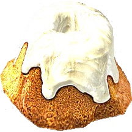

Sweetrolls Recipe

About this Recipe
Let me guess, someone stole your sweetroll?
No need to worry, friend. Here is a simple recipe to create more delicious sweetrolls to remedy whatever loss you may have experienced.
Ingredients
- 1 1/2 cups from Sack of Flour
- 1 1/2 tsp from Salt Pile
- 2 cups from Jug of Milk
- 3 Chicken Eggs
- 6 Tbsp Butter
- 2 cups (Moon)Sugar
- 2 Tbsp Water
- 1/4 tsp Vanilla Extract
Instructions
Pastries
- Combine flour and salt in a mixing bowl using a whisk or fork.
- Whisk 3 eggs with around half of the milk, mix this into the salted flour until you are left with a smooth batter (no lumps remaining).
- Slowly pour the rest of the milk along with the melted butter, while whisking continually until completely combined (the batter will be very runny).
- Leave the bowl until the contents reach room temperature. Meanwhile, place a greased mini bundt pan (or similar) in your oven and preheat the oven to 250°C.
- Quickly open the oven door and slide out the hot pan, pour the batter into the pan's moulds, right to the top. Carefully slide the pan back into the oven and set a timer for 30 minutes. Do not open the oven door before the timer is up.
- After 30 minutes, open the oven door and check the pastries. They should be a nice golden brown with a crispy top. Once achieved, you can reduce the oven to 100°C and let them bake for 10 more minutes before removing them.
- Remove the pastries from the pan, flip them around and press gently to help them sit flat.
Icing
- Combine sugar, water, and vanilla extract in a mixing bowl until smooth.
- Drizzle the icing over the pastries using a spoon, or use a piping bag if you wanna be fancy.
- Enjoy!
Credit to UESP for the sweetroll image, licensed under the Creative Commons by-sa license.
Back to homepage